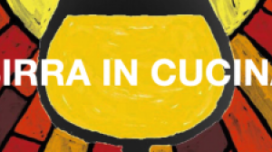
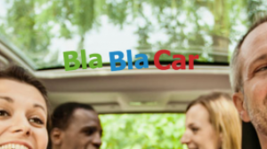
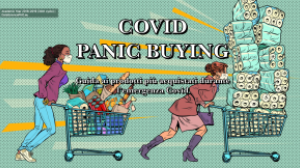
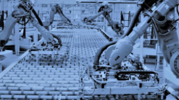
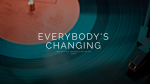
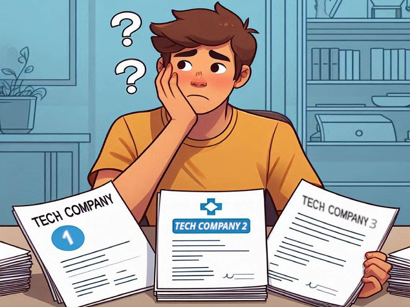
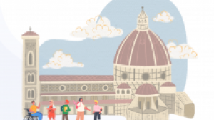
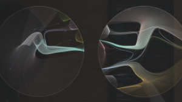
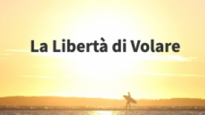
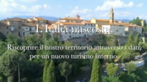
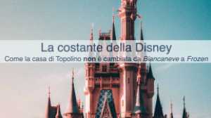
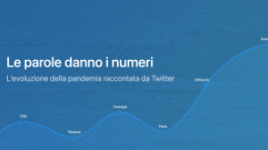
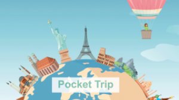
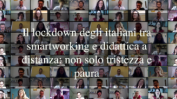
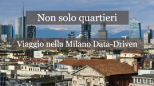
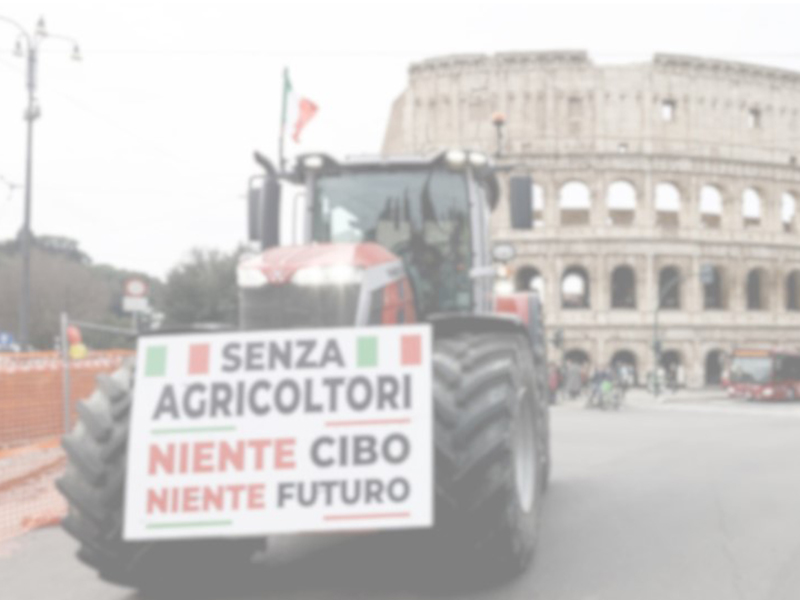
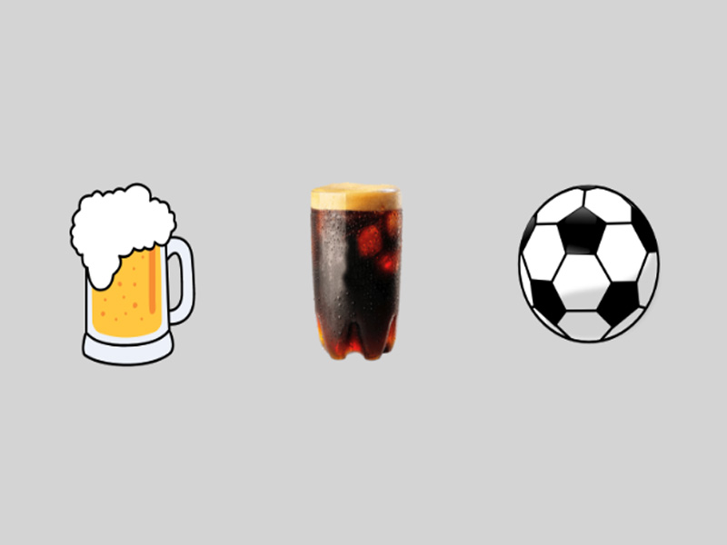
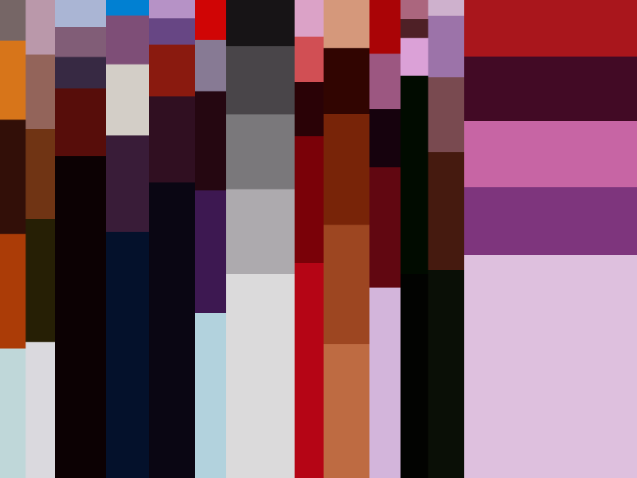
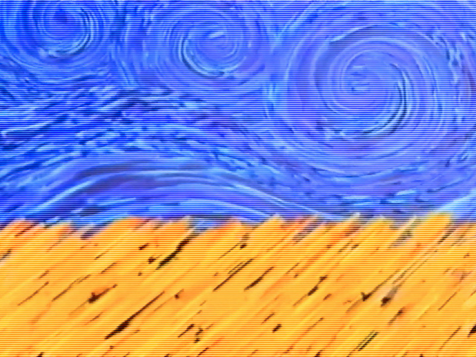
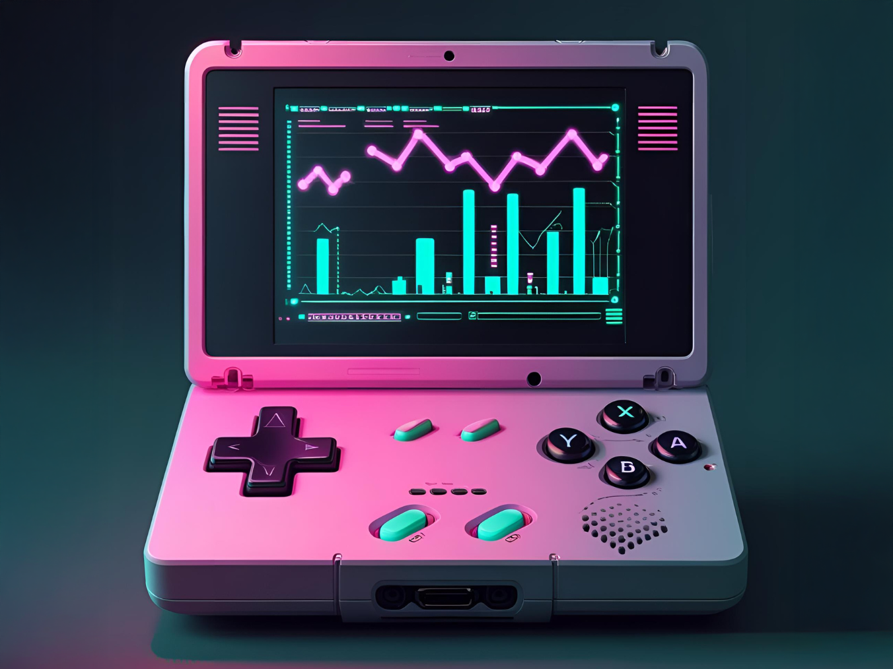
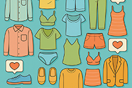
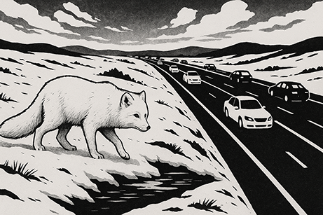
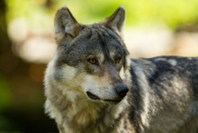
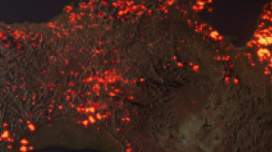
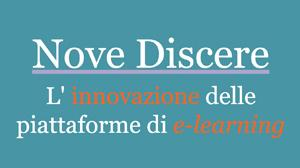
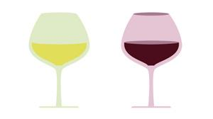
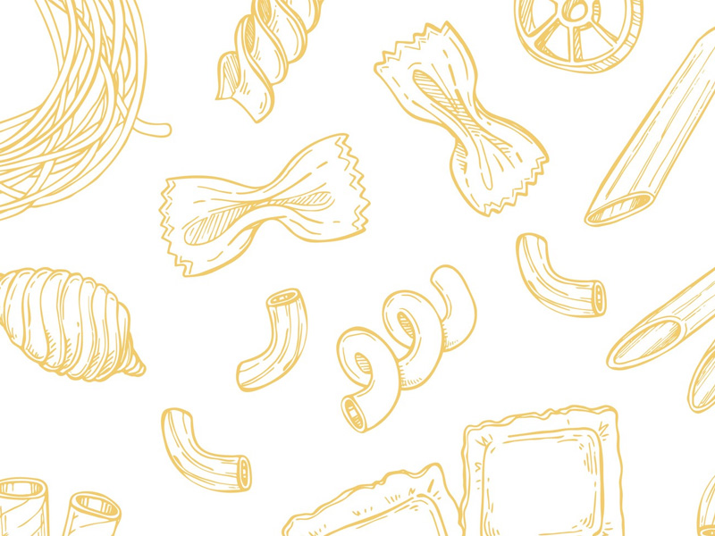
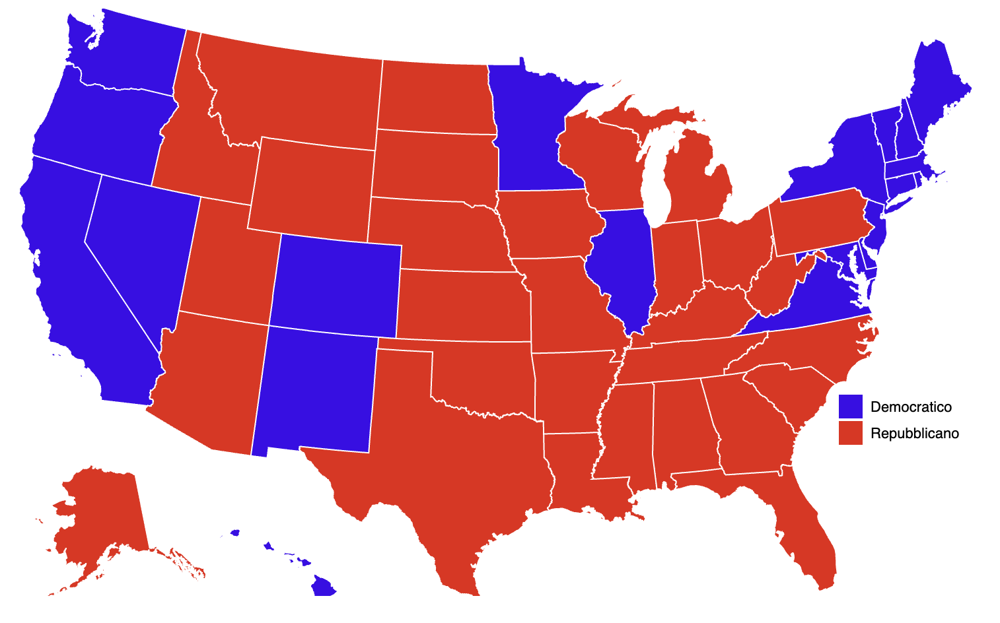
Dati, storie, applicazioni
I progetti del Master rappresentano il momento in cui gli studenti applicano concretamente le competenze acquisite, sviluppando analisi innovative su tematiche di rilevanza sociale, economica e culturale.
Gli studenti lavorano in gruppi multidisciplinari, affrontando problemi reali da diverse prospettive e integrando le conoscenze delle discipline studiate: dalla raccolta e gestione dei dati all'analisi con tecniche di machine learning e AI, fino alla visualizzazione e presentazione dei risultati.
I progetti spaziano dall'analisi dei social media agli studi economici e sociali, dalle applicazioni di intelligenza artificiale alla ricerca sugli impatti etici dei big data nella società.
Ogni progetto è seguito da tutor accademici e, quando possibile, sviluppato in collaborazione con i partner del Master, garantendo un'esperienza formativa che prepara direttamente al mondo professionale.
Ricerca Progetti
Progetti 2025
1. Gamebreaking
Unlocking the data behind a videogame's success
Studenti: Gioele Eterno, Giancarlo Padula, Elvira Papaleo, Domenico Scordino, Guangrui Shi.
2. You don't need to be coy, COI!
Concerning companies and medical research
Studenti: Andreucci Giovanna, Arioli Jacopo, Baronchelli Davide, Conte Emanuele, Gullace Viola, Fonderico Mattia, Bianchini Massimiliano.
4. The italian Job of Cyber Crime
Data, Emotions, and Investments in the Cyber War
Studenti: Amati Emanuele, Balzano Francesco, Conte Davide, Lorusso Francesca, Scudiero Lidia.
5. Like 2 Resell
How popularity rules the second hand market
Studenti: Bonini Simone, Bianchi Thomas, Giannoni Beatrice, Grassi Francesco, Marti' Aguirre Stefano, Pizzi Costanza.
6. The European Mammal Atlas
Climate change, land use and the future of terrestrial wildlife
Studenti: Aghaalikhani Milad, Buonanno Giuseppe, Cuppone Francesca, Landolfo Alessandro Pio, Liuzzo Scorpo Rosario, Wimmer Sarah.
Progetti 2024
1. Spot TV
La comunicazione pubblicitaria televisiva dal 1980 a oggi
Studenti: Oltiana Asllani, Giorgio Bellante, Denise Botrini, Giorgia De Re, Axel Perini, Dimitri Viccari.
2. Youtube e i podcast: l'ascesa nella nuova era di contenuti digitali
Come è cambiato il mondo dei podcast negli ultimi 10 anni?
Studenti: Ivano Carta, Marco Serafino, Luca Paolini, Davide Rasso, Maurizio Ronconi, Lorenzo Viciani.
3. AvvoChat
L'AI giuridica che risponde ai dubbi legali degli italiani
Studenti: Francesca Vatteroni, Angela Cofrancesco, Pasquale Maritato, Roberta Felice, Fabrizio Tomasso, Andrea Alessandrelli.
5. Nasci ingegnere muori data scientist
Analisi delle offerte di lavoro del mondo tech su Linkedin
Studenti: Jacopo della Bartola, Giulio Faraoni, Donatella Mauro, Martina Podestà, Simone Proto, Giulia Segurini.
6. Non si molla… e che Dio ci benedica!
Analisi delle proteste agricole nel contesto italiano
Studenti: Antonio Donnangelo, Beatrice Ferrigno, Diego Palombi, Gianluca Regè, Riccardo Conti.
7. Birra, fernandito e pallone
A linguistic and social network analysis on the role of football as geographical, cultural and social glue using Twitch data
Studenti: Antonio Federico Barbano, Luciana Fazio, Daniela Lorieri, Ramiro Predassi, Miriana Somenzi.
8. CraveIt
What's the best carbonara in Rome?
Studenti: Luca Antonini, Francesco Peria, Ludovica Santinelli, Maria Paola Sforza Fogliani, Andrea Vitali.
Progetti 2023
Progetti 2022
1. Changes in latitudes and attitudes
Il nuovo turismo alberghiero post Covid-19
Studenti: Luca Fusar Imperatore, Belinda K. Graux Bonilla, Leonardo Catalano, Maria Iacono, Giovanni Pievani Trapletti.
2. Nove discere
L'innovazione delle piattaforme di e-learning
Studenti: Francesco Cappellini, Luca Gestri, Giuseppe Incarbone, Michele Joshua Maggini, Riccardo Regnicoli.
3. Stocks are going viral
social media influence the financial market
Studenti: Alessandro Ciocchetti, Gwydyon Marchelli, Lorena Volpini, Olga Cozzolino, Davide Bottinelli.
4. Taste your wine
Wine E-commerce Analysis
Studenti: Ayoub el Maataoui, Gabriele Ottaviani, Francesco Demo, Riccardo Pizzuti, Stefano de Cet.
5. Twittatori contro la paura
Parole in guerra: emozioni a confronto fra giornali e twitter sul conflitto più social di tutti i tempi
Studenti: Agnese Fazio, Clara Banti, Gino Fabbrucci, Roberta Fischetti, Jorge Shortede.
6. Web of hate
Hai sentito di quel tizio che è caduto da un grattacielo? Mentre scendeva, passando da un piano all'altro, continuava a ripetere per rassicurarsi: Fin qui tutto bene...
Studenti: Luca Maddalena, Davide Cortazzo, Giulia Luongo, Francesca Giorgi, Claudio Giovannoni.
Progetti 2021
1. Comizi D'Amore 2.0
La discussione sessuale e di genere in Italia attraverso i dati delle piazze online
Studenti: Fatima Abid, Luca Buoni, Eleonora Cappuccio, Guglielmo Giomi.
2. Disagio A Distanza
ma non solo...
Studenti: Lorenzo Maggioletti, Marco Zecchinato, Maria Raffa, Miki Mema, Roberto Narducci.
3. Distretti Tecnologici 4.0
Nuove tecniche per mappare l'innovazione
Studenti: Nicolò Allegra, Luca Cavargini, Niccolò Silicani.
4. Everybody's Changing
How has music changed in the past few years?
Studenti: Giovanni Cusumano, Martina Formichini, Giuseppe Minardi, Carmela Sgroi.
5. Pocket Trip
Il tuo viaggio a portata di mano
Studenti: Alfonso Corrado, Francesca Silvia Carosio, Isabel Carozzo, Riccardo Gabriele Scasso, Simona Barba.
6. Sotto una Coltre di Fumo
Una panoramica mondiale su come i media parlano dei Grandi Incendi Forestali
Studenti: Elisa Mercanti, Gianluca Guidi, Marzia Longo, Vincenzo Aiello.
Progetti 2020
1. Covid Panic Buying
Guida ai prodotti più acquistati durante l'emergenza Covid
Studenti: Andrea Pugnana, Yuri De Rosa, Riccardo Bufalini, Francesca Giannaccini.
2. Il lockdown degli italiani
tra smartworking e didattica a distanza: non solo tristezza e paura
Studenti: Alice Borselli, Valentino Calcagno, Fabio Gitto, Sebastiano Martorana.
3. L'Italia Nascosta
Riscopri il turismo locale attraverso i dati
Studenti: Giangaetano Pachera, Gianluca Sperduti, Ada Maragno, Lorenzo Basile.
4. La Costante della Disney
Come la casa di Topolino non è cambiata da Biancaneve a Frozen
Studenti: Elena Baccoli, Valeria Guttilla, Attilio Trovato, Angelo Turco.
5. Le parole danno i numeri
L'evoluzione della pandemia raccontata da Twitter
Studenti: Nicola Leonardi, Marco Barchitta, Nicola Salerno, Vincenzo Giammetta.
6. Non solo quartieri
Viaggio nella Milano Data-Driven
Studenti: Giulia Vasciaveo, Tommaso Losterzo, Noemi Gabrieli.
Progetti 2019
1. Cinema & Machine Learning
Può una macchina predire il successo di un film?
Studenti: Filippo Cassano, Guido Cei, Laura De Grazia, Simone Fabbrizzi, Lorenzo Lodi.
2. Dal Web al carrello
Quando la lista della spesa la scrive internet
Studenti: Maurizio Gazzarri, Alessio Gurioli, Daniele Pau, Cristina Romani.
3. Fare ricerca oggi
Un'analisi della ricerca italiana attraverso i dati di Scopus
Studenti: Anastasia Bogomolova, Antonio Coiro, Alessandro D'Elia, Raffaele Mazziotti.
4. Job offer market
Viaggio nel mondo dell’offerta di lavoro online
Studenti: Maria Luisa Costa, Giuliano Gemma, Valentina Gori, Alberto Olivieri.
5. Tecnofili o tecnofobi?
Viaggio nel mondo dell'innovazione tra paure e speranze per il futuro
Studenti: Eduardo Bondielli, Ilenia Galluccio, Luca Paganelli, Nunzia Squicciarini, Isaia Tarquini.
6. Viaggio nell'influencer marketing
How to be the next?
Studenti: Olivia Lanzoni, Giulia Lucherini, Tina Martino, Barbara Ranghetti, Paola Serratì.
Progetti 2017
Progetti 2016
2. Birra 'mbriaha
Gli italiani seguono gli abbinamenti giusti?
Studenti: Valentina Mulas.
3. BlaBlaCar ai raggi-X
Le 10 curiosità del più grande servizio di car-sharing al mondo
Studenti: Cardinaletti, Ceriotti, Ferrucci, Nardi.
")
")
")
")
")
")
")
")
")